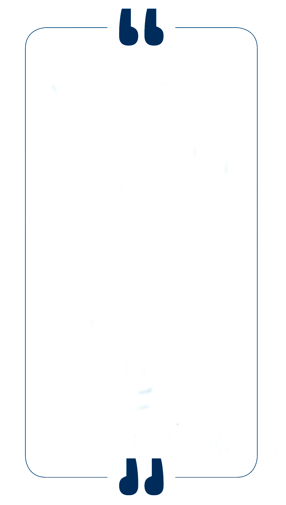
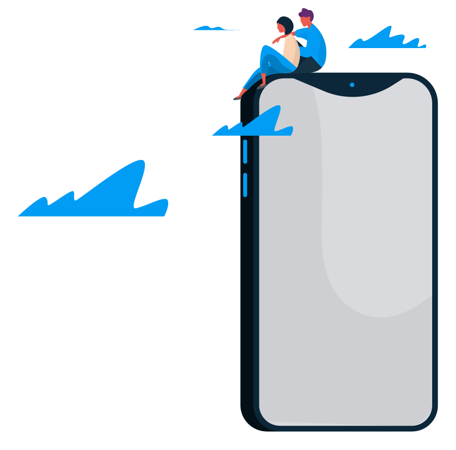

Informe Gestión Responsable 2020
Relevancia del
ecosistema digital

LA CRISIS DE LA COVID-19 HA AFECTADO PROFUNDAMENTE A LAS sociedades en las que operamos. La misión de la Compañía (hacer nuestro mundo más humano, conectando la vida de las personas) ha cobrado más relevancia que nunca. En una situación extraordinaria y totalmente inesperada, las redes de telecomunicaciones se han convertido en esenciales y nuestros equipos han trabajado en estrecha colaboración con las autoridades sanitarias y los agentes sociales para dar una respuesta responsable a todos nuestros grupos de interés. Esta crisis va a acelerar la digitalización de la sociedad de forma irreversible. Nos ha demostrado que no hay una vida analógica y una digital, sino que son la misma cosa. El mundo ya ha cambiado y no volverá a ser como antes. En este nuevo mundo, Telefónica tendrá un papel clave como catalizador de esa digitalización
¿Cuál fue la primera respuesta de la Compañía en medio de esa conmoción? Precisamente esa: mantener las comunicaciones.
Telefónica se ha erigido estos meses en el soporte que ha mantenido viva la actividad empresarial, cultural, educativa y laboral de nuestras sociedades. Incluso la propia respuesta sanitaria y administrativa a la emergencia ha descansado sobre nuestras redes”.
JOSÉ MARÍA ÁLVAREZ-PALLETE
Presidente de Telefónica.
Junta General de Accionistas 2020, Telefónica.
Contexto del sector
En todos los escenarios se discuten los efectos de la pandemia y la interrupción de las actividades humanas que forzaron la transición acelerada de la sociedad hacia el mundo digital. En este contexto, compañías de todos los sectores de la economía se transformaron para enfrentar los retos del confinamiento. Para Movistar, entre tanto, además de los retos, 2020 fue un año para demostrar lo que es, y durante 2020 hizo lo que mejor sabe hacer: hacer el mundo más humano, conectando la vida de las personas, tal como lo expresa la Misión de Compañía. Mantuvo a los más de 19 millones de clientes conectados, lanzó la mejor oferta de telecomunicaciones de la historia que es IlimiDatos, desplegó la mayor red de fibra óptica de Colombia para mejorar la conectividad de las personas, y reforzó aún más el apoyo a la sociedad por medio de diversas acciones canalizadas a través de la Fundación Telefónica Movistar.
A causa del confinamiento, los negocios de prepago y terminales tuvieron impactos relevantes, así como el Segmento Mipymes, que también sintió con fuerza las consecuencias de la pandemia. Sin embargo, la intensidad competitiva se mantiene en el mercado. El precio medio de los datos móviles
del mercado sigue en descenso y la velocidad de Internet está creciendo más que nunca. Adicionalmente, se presenta la entrada de un nuevo operador que accede al mercado tras actuaciones recusables en la subasta de espectro de 2019, así como en la adquisición de otro operador, lo que le debería limitar el estatus de entrante en el mercado y los beneficios que ello trae. Estas actuaciones han generado distorsión y desequilibrio en las condiciones del mercado.
Otro tema relevante es la continuidad, en el sector de telecomunicaciones, de un esfuerzo por parte de todos los actores por ser más eficientes y optimizar sus operaciones. Así, las inversiones están más focalizadas que nunca en mejorar el servicio a los clientes.
En el escenario regulatorio, se mantiene la inactividad del Estado colombiano ante la presencia de un
Para Movistar, entre tanto, además de los retos, 2020 fue un año para demostrar lo que es, y durante 2020 hizo lo que mejor sabe hacer: hacer el mundo más humano, conectando la vida de las personas, tal como lo expresa la Misión de Compañía.
operador dominante en el mercado. No se han tomado medidas para corregir una situación que no solo les resta opciones a los colombianos, sino que afecta la competitividad del país como un todo. La Compañía espera que en 2021 se tomen medidas efectivas para mitigar el impacto del actor dominante en el sector.
Contexto de Sostenibilidad
Generar desarrollo es una necesidad, y que el mismo sea sostenible se ha convertido en un requisito para todos los sectores. Esto se evidencia en el cada vez más profundo compromiso de cumplir la Agenda 2030, el cual han suscrito no solo gobiernos, sino también empresas, academia, organizaciones de la sociedad civil, gremios e incluso personas naturales. Hoy, los grupos de interés son más críticos a la hora de tomar decisiones acerca de dónde trabajar, dónde comprar y dónde invertir, en gran parte debido a la relevancia que actualmente se le asigna a la información no financiera, también conocida como gestión ASG (Ambiental, Social y de Gobernanza), llegando incluso a ser de reporte obligatorio en algunos países.
En Colombia, por ejemplo, son síntomas de esta tendencia iniciativas como la creación de la figura de las Sociedades de Beneficio e Interés Colectivo (BIC), que hacen un llamado a un liderazgo consciente, así como a promover un ecosistema de organizaciones privadas que tengan un propósito social y ambiental más allá de la maximización del interés económico de los accionistas, destacando la relevancia de presentar un Informe, de contar con un esquema de gestión ético y transparente, y de fortalecer las relaciones de confianza con las partes interesadas.
Como Telefónica lo viene anticipando, esta no es una era de cambios, sino en un cambio de era. En este contexto, la sostenibilidad y el compromiso de las empresas por asegurar y lograr ser negocios sostenibles son asuntos esenciales. Esto implica que se piense no solo en qué para obtener resultados positivos, sino también en cómo se alcanzan, es decir, cómo las acciones
Hoy, los grupos de interés son más críticos a la hora de tomar decisiones acerca de dónde trabajar, dónde comprar y dónde invertir, en gran parte debido a la relevancia que actualmente se le asigna a la información no financiera.
de negocio de la Compañía generan un impacto positivo en la sociedad más allá de los beneficios económicos.
Actualmente, existen diversas tendencias que resultan claves para las empresas cuando de trabajar por un negocio sostenible se trata. El Instituto de Formación Continua de la Universidad de Barcelona ha catalogado el 2020 como el año de la sostenibilidad, idea que se ha visto reforzada con la emergencia sanitaria de la COVID-19. Según este Instituto, el 2020 traería una nueva agenda en materia sostenible para la humanidad, basada en la generación de economías sostenibles, o el reforzamiento de la lucha contra el cambio climático, y por la transparencia y la anticorrupción, definida por el AECOC Innovation Hub como trust economy o economía de la confianza.
Es así como cada vez más organizaciones -públicas, privadas o internacionales- generan alianzas y se unen para articularse y acercarse más a la consecución de los Objetivos de Desarrollo Sostenible. Puede considerarse que estas tendencias suponen una importante aceleración en la lucha por el logro de la Agenda 2030, especialmente, para los ODS relacionados con las acciones en materia ambiental (ODS 6, 7, 12, 13, 14 y 15), y de fortalecimiento institucional (ODS 16 y 17).
Pacto Digital para la reactivación
El 2020 ha sido un año desafiante para la humanidad, ya que a lo largo de los últimos meses se ha pasado por diferentes fases que han ido desde cuarentenas, hasta reaperturas y reactivación. La pandemia ha obligado a repensar el presente y el futuro; se trata de un momento sin precedentes en donde se ha hecho evidente el poder transformador de las tecnologías de la información y las comunicaciones.
Una verdadera revolución que está impactando a todos los sectores y a todas las sociedades.
Desde Telefónica Movistar se propone un gran acuerdo público-privado: un nuevo Pacto Digital que ayude a asegurar una digitalización más justa y sostenible. La propuesta se basa en 5 pilares fundamentales para que América Latina avance hacia un futuro más próspero:
1
Lo primero que se propone es impulsar, de modo efectivo, la digitalización para conseguir sociedades y economías sostenibles. Esto exige una apuesta agresiva por la digitalización de las Administraciones Públicas, pero también el fomento de programas de Industria 4.0 dirigidos a mipymes.
2
En segundo lugar, para abordar la desigualdad social se necesita invertir en educación y competencias digitales. La tarea que está desarrollando la Fundación Telefónica Movistar con el Proyecto ProFuturo, en alianza con La Caixa, en el campo de la educación digital, con foco en 10 territorios del Caribe de la mano de la OEA, es motivo de especial orgullo.
3
El tercer pilar, ubicado en el centro de la propuesta, consiste en la construcción de una conectividad inclusiva y sostenible.
4
El cuarto pilar propone acelerar en la ampliación del acceso digital mediante la revisión de los marcos regulatorios y fiscales, asegurando una competencia equilibrada que incentive las inversiones en infraestructura digital.
5
Por último, pero no por eso menos importante, el quinto pilar plantea avanzar en esa digitalización sostenible mejorando la confianza en el entorno digital, lo que debe lograrse mediante un uso ético y responsable de la tecnología.
2
En segundo lugar, para abordar la desigualdad social se necesita invertir en educación y competencias digitales. La tarea que está desarrollando la Fundación Telefónica Movistar con el Proyecto ProFuturo, en alianza con La Caixa, en el campo de la educación digital, con foco en 10 territorios del Caribe de la mano de la OEA, es motivo de especial orgullo.
Un pacto digital para reactivar mejor nuestras sociedades y economías
Telefónica Movistar, a través de la tecnología y la digitalización es el aliado para reconstruir mejor nuestras sociedades y economías. Proponemos un diálogo y una cooperación renovados entre los gobiernos, la sociedad y la comunidad empresarial para colaborar en estos tiempos tan complejos y hacer que la transición digital sea sostenible.

INTERNET EN EL HOGAR
¿Cómo está aportando Movistar?